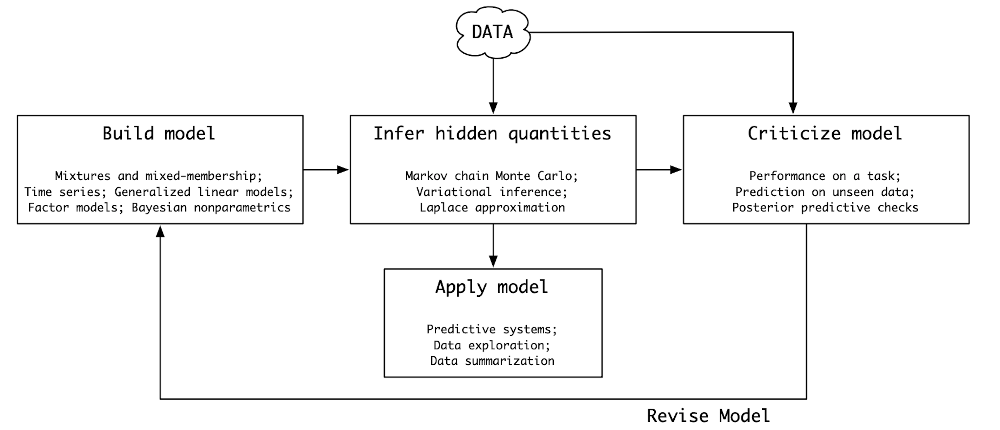
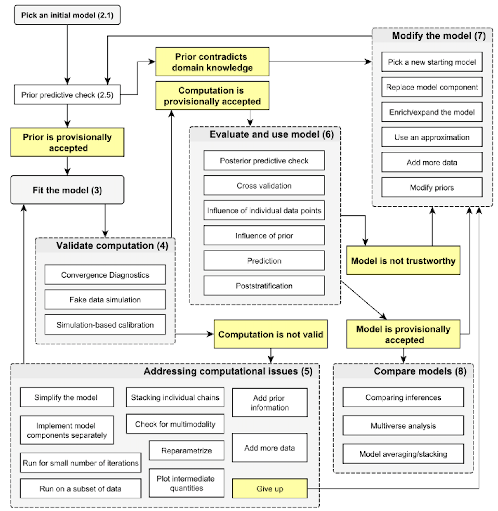
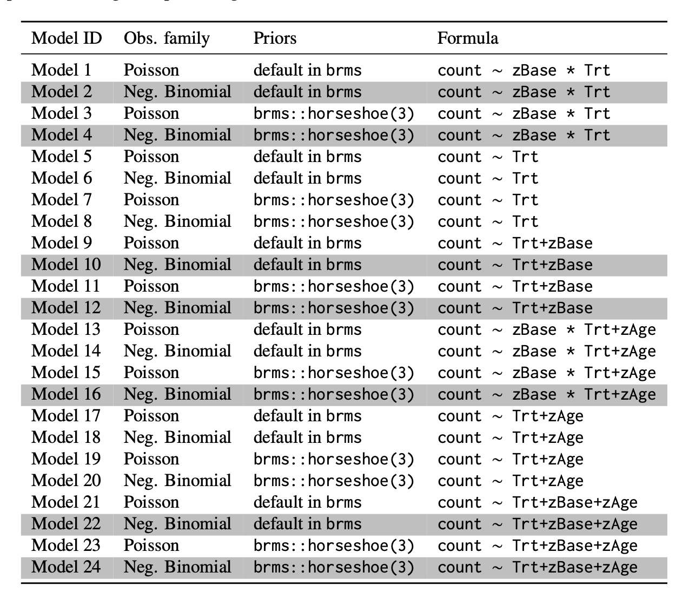
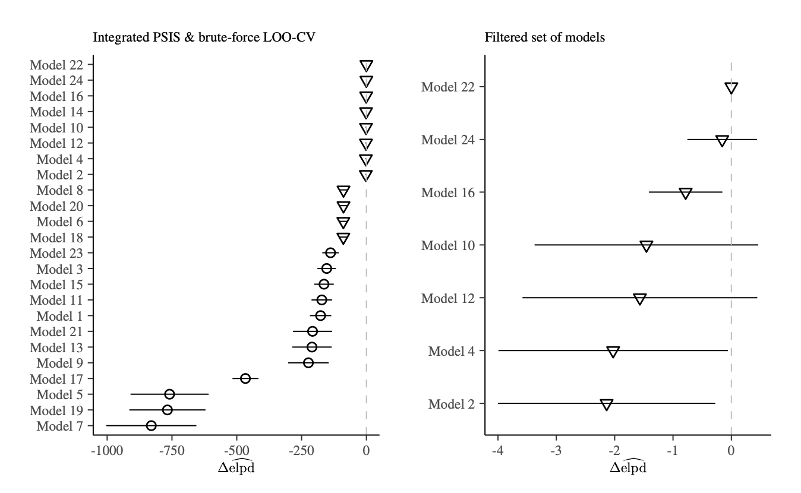
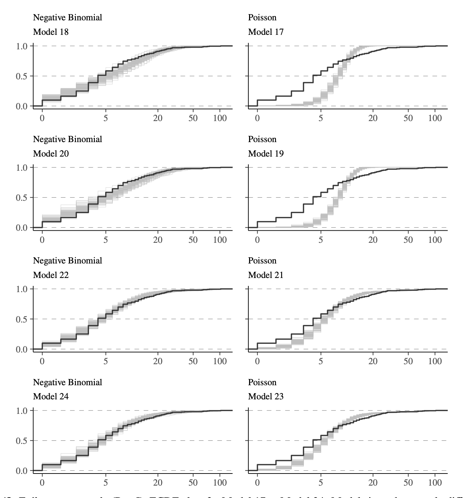

57 Flusso di lavoro bayesiano
- comprendere il workflow bayesiano, un approccio iterativo che include formulazione, implementazione, verifica e miglioramento continuo dei modelli.
- comprendere le verifiche predittive, ovvero le simulazioni dei dati a priori e a posteriori per testare la coerenza del modello con i dati osservati.
- comprendere l’analisi multiverso: un framework per la considerazione congiunta e trasparente di diversi modelli candidati (Steegen et al., 2016).
57.1 Introduzione
L’applicazione dell’inferenza bayesiana nella risoluzione di problemi reali richiede un approccio strutturato e multidisciplinare, noto come workflow bayesiano. Questo processo iterativo e complesso va ben oltre la semplice applicazione della regola di Bayes, che pur costituendo il fondamento teorico dell’inferenza bayesiana, rappresenta solo il punto di partenza di un percorso analitico più articolato.
Il workflow bayesiano include molteplici fasi interconnesse, tra cui:
- Costruzione iterativa del modello: Definizione e revisione di modelli probabilistici che rappresentano i processi generativi dei dati.
- Verifica e validazione: Controllo della qualità delle stime e valutazione delle capacità predittive del modello.
- Risultati e interpretazione: Confronto tra modelli alternativi per trarre conclusioni solide.
- Gestione di problemi computazionali: Identificazione e soluzione di eventuali difficoltà nell’adattamento del modello.
Per esempio, immaginiamo di voler valutare l’efficacia di un intervento psicologico. Il ricercatore deve affrontare diverse decisioni: quali variabili includere (covariate), come modellare i dati gerarchici (ad esempio, individui e gruppi), e quali distribuzioni utilizzare per rappresentare incertezze (priori). Queste decisioni, lungi dall’essere definitive, richiedono continui aggiustamenti basati sui risultati intermedi.
Un ulteriore aspetto critico è la gestione di possibili problemi computazionali. Ad esempio, il campionamento MCMC (Markov Chain Monte Carlo) potrebbe non convergere correttamente, richiedendo modifiche al modello o all’approccio algoritmico. Inoltre, il workflow bayesiano non si limita alla stima dei parametri: include la valutazione della capacità del modello di fare previsioni attendibili e il confronto tra modelli alternativi.
Infine, è fondamentale bilanciare la complessità del modello con la rilevanza pratica dei risultati. Modelli troppo semplici possono portare a conclusioni distorte, mentre modelli troppo complessi possono diventare difficili da interpretare. Il workflow bayesiano aiuta i ricercatori a navigare queste sfide, fornendo un quadro metodologico flessibile e iterativo.
57.2 Principi del workflow bayesiano
Un workflow è una sequenza strutturata di passi che definisce cosa costituisce una “buona pratica” in un determinato ambito. Nel contesto dell’inferenza bayesiana, il workflow si ispira a concetti come il Ciclo di Box e le più recenti estensioni proposte da studiosi come Gelman e Riha.
57.2.1 Il Ciclo di Box
George Box, uno dei pionieri della statistica moderna, ha sviluppato negli anni ’60 un approccio ciclico alla modellizzazione statistica, noto come Ciclo di Box. Questo paradigma sottolinea che la modellizzazione non è un processo lineare, ma un ciclo continuo di miglioramento.

Il Ciclo di Box si articola in una serie di fasi iterative:
- Formulazione del modello: Si costruisce un modello basato sulle conoscenze disponibili e sui dati osservati.
- Inferenza: Si stimano i parametri del modello e si valutano le incertezze associate.
- Valutazione del modello: Si verifica quanto il modello si adatta ai dati.
- Revisione del modello: Si corregge il modello in base alle discrepanze identificate.
Questo approccio iterativo è il cuore del workflow bayesiano. La capacità dell’inferenza bayesiana di aggiornare le credenze a priori alla luce di nuovi dati lo rende particolarmente adatto a essere integrato nel Ciclo di Box. Più recentemente, Gelman et al. (2020) hanno proposto una versione estesa del Ciclo di Box, fornendo una guida dettagliata per implementare un workflow bayesiano completo.

57.3 Costruzione iterativa del modello
Il processo di costruzione di un modello bayesiano può essere descritto attraverso i seguenti passaggi:
Comprensione del fenomeno e formulazione del problema: Il punto di partenza è definire chiaramente la domanda di ricerca. L’obiettivo non è semplicemente descrivere correlazioni tra variabili, ma comprendere i meccanismi generativi dei dati.
Formulazione matematica: Si costruisce un modello probabilistico che rappresenti il processo generativo, spesso utilizzando linguaggi probabilistici (PPL) come Stan o PyMC.
Implementazione: Il modello viene tradotto in codice utilizzando interfacce software come R, Python o Julia, che permettono di adattare modelli complessi ai dati.
Verifiche predittive a priori: Si simulano dati basandosi sulle distribuzioni a priori per verificare che i parametri scelti siano ragionevoli.
Adattamento del modello: Si utilizza un algoritmo di campionamento per stimare i parametri del modello dai dati osservati (ad esempio,
cmdstanrocmdstanpy).Diagnostiche di convergenza: Si verifica che le catene MCMC abbiano raggiunto la convergenza, utilizzando strumenti come il valore
R-hat.Verifiche predittive a posteriori: Si generano dati simulati a partire dalla distribuzione a posteriori per confrontarli con i dati reali e valutare la bontà del modello.
Iterazione: Sulla base dei risultati, il modello viene raffinato e migliorato.
Questo processo iterativo consente di costruire modelli che siano sia robusti sia interpretabili.
57.4 Analisi Multiverso
L’analisi multiverso, introdotta recentemente (Riha et al., 2024), amplia il workflow bayesiano, permettendo di esplorare simultaneamente molteplici modelli alternativi. Ogni modello rappresenta una combinazione unica di scelte modellistiche (ad esempio, covariate, distribuzioni a priori, o assunzioni sul processo generativo).
I vantaggi principali dell’analisi multiverso includono:
- Trasparenza: Documenta tutte le scelte di modellizzazione.
- Esplorazione completa: Riduce il rischio di trascurare ipotesi rilevanti.
- Confronto diretto: Permette di identificare i modelli più adatti basandosi su criteri come l’Expected Log-Predictive Density (ELPD).
- Robustezza: Esamina come le conclusioni cambiano tra diversi modelli.
- Replicabilità: Fornisce informazioni dettagliate per riprodurre l’analisi e i risultati.
Questo approccio incorpora anche verifiche computazionali e analisi di sensibilità. Le prime identificano i modelli che necessitano di ulteriori verifiche per garantire l’affidabilità dei risultati, mentre le seconde esaminano la robustezza delle conclusioni rispetto alle diverse scelte di modellazione e all’influenza delle priori sulle stime posteriori.
Tuttavia, la generazione di numerosi modelli può complicare la gestione e l’interpretazione dei risultati. Per affrontare questa sfida, Riha et al. (2024) propongono un metodo di “iterative filtering” che comprende:
- Creazione di un multiverso iniziale di modelli.
- Valutazione delle capacità predittive attraverso controlli predittivi posteriori (PPC) e calcolo dell’expected log point-wise predictive density (elpd).
- Verifica della qualità computazionale, esaminando convergenza ed efficienza del campionamento MCMC.
- Filtraggio iterativo basato su criteri di qualità predefiniti.
- Possibilità di estendere il multiverso e ripetere il processo.
Questo approccio mantiene i vantaggi della multiverse analysis riducendo al contempo la complessità attraverso un filtraggio sistematico. Il risultato è un workflow bayesiano più robusto e informativo, che bilancia la necessità di considerare molteplici ipotesi modellistiche con l’esigenza pratica di focalizzarsi sui modelli più promettenti per il problema in esame.
Uno dei casi di studio esaminati da Riha et al. (2024) riguarda l’analisi del numero di crisi epilettiche in relazione a diverse variabili (covariate) e scelte di modellazione. I dati utilizzati provengono dallo studio di Leppik et al. (1987) e sono disponibili nel pacchetto R brms.
Sono stati confrontati 24 modelli statistici, ciascuno con una specifica formulazione matematica (illustrata nella Tabella seguente). La scelta dei modelli ha riguardato diverse combinazioni di covariate e di distribuzioni di probabilità per descrivere il fenomeno in esame.

Per valutare la capacità predittiva dei modelli, è stato utilizzato il criterio ELPD (Expected Log-Predictive Density). I risultati sono riportati nel grafico seguente.

Come si può osservare, i modelli presentano performance predittive differenti.
Oltre all’ELPD, sono stati condotti controlli predittivi posteriori (PPC) per valutare la plausibilità dei modelli rispetto ai dati osservati. I risultati dei PPC sono visualizzati nella figura seguente.

Il modello selezionato è quello che ha mostrato il miglior valore di ELPD, evidenziando una buona capacità predittiva. Inoltre, i controlli PPC hanno confermato la plausibilità del modello rispetto ai dati osservati. Infine, il modello selezionato non ha presentato problemi computazionali durante la stima dei parametri.
57.5 Riflessioni Conclusive
Il workflow bayesiano rappresenta una strategia strutturata e iterativa per affrontare l’analisi dei dati complessi. Attraverso strumenti come le verifiche predittive e l’analisi multiverso, consente di sviluppare modelli solidi e capaci di adattarsi a nuovi dati e conoscenze. La sua integrazione con linguaggi come Stan o PyMC ne facilita l’applicazione, rendendolo un approccio essenziale per la ricerca moderna.